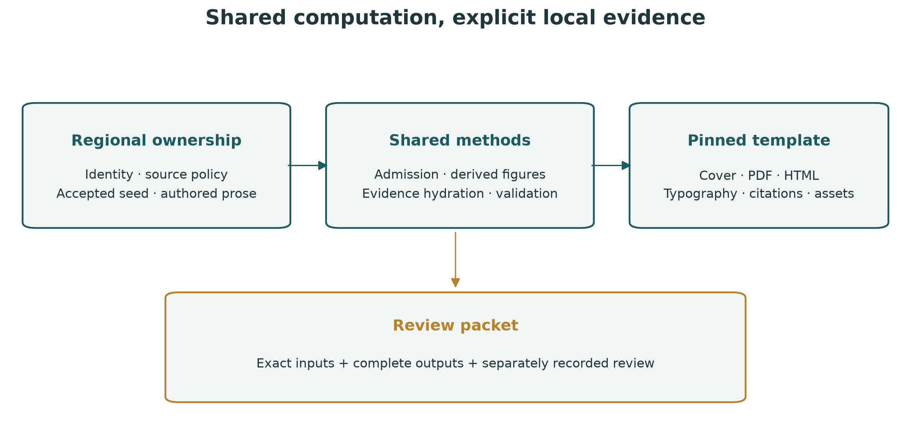
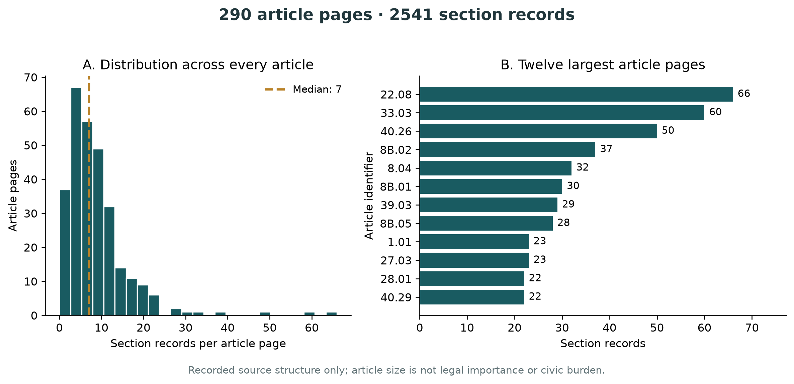
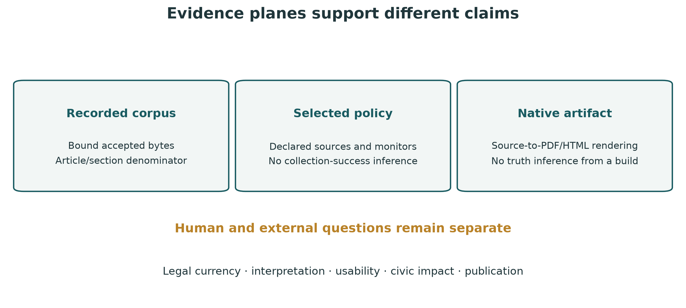

1 Graphical abstract

2 Abstract
Regional civic information systems combine municipal texts, agency notices and time-sensitive observations, but software reuse can obscure which evidence and operating assumptions belong to a particular place. We present Davis CA Intel as a reproducible software-deployment and corpus-description case study. A thin regional repository selects identity, source policy and accepted public evidence, while Region Intel supplies shared acquisition, validation, search and manuscript methods. The recorded Davis municipal edition contains 290 article pages and 2541 section records from eCode360 DA4922, verified at 2026-10-31T03:39:57.381Z. We derive a complete article-level structural profile from that accepted snapshot and retain the exact numerical table behind the figures. Configuration declares 10 sources and 8 enabled monitors; these are not successful-collection counts. A pinned revision of docxology/template produces the cover, graphical abstract, PDF and offline HTML, with source, artwork, derived-data and rendering identities bound in the review packet. The contribution is an inspectable boundary between reusable computation, local evidence and publication presentation. No civic-impact experiment, human usability study, independent legal review or model-answer benchmark is reported.
3 Introduction
3.1 Problem and scope
A useful regional information system must answer two different questions: what its software can do, and what its retained evidence actually supports. A source adapter may be implemented without a current observation. A searchable municipal snapshot may be internally coherent without establishing that every provision remains current. A well-formed generated answer may still require substantive review. These distinctions become harder to maintain when a second locality inherits a first locality’s configuration, language and publication artifacts.
This case study concerns Davis, California. Its unit of observation is the accepted DA4922 municipal-code record set and the deployment documents that select its operating policy. It examines whether shared software can preserve regional identity, reproduce a descriptive corpus profile and publish a manuscript whose numerical statements remain attributable to that record set. It does not estimate public benefit, legal completeness or hazard exposure. The original Crescent City application supplies compatibility history in the shared package; its empirical findings are not Davis observations.
3.2 Scholarship and design commitments
Open-government data scholarship cautions against treating the act of opening data as a sufficient mechanism for realizing public value (Janssen et al. 2012). For this project, the practical implication is a research boundary: accessible records and working interfaces are intermediate artifacts, whereas usefulness to residents requires separate empirical assessment.
PROV-DM distinguishes entities, activities and responsible agents (World Wide Web Consortium 2013). We use that distinction to separate a retained municipal edition, the transformations applied to it and the ownership of the resulting packet. Our receipts are a project-specific implementation of those concerns, not a claim of complete PROV serialization or formal conformance. The W3C’s Data on the Web Best Practices adds an operational emphasis on provenance, quality, version indicators and preservation (World Wide Web Consortium 2017).
Dataset documentation offers a complementary perspective. Datasheets describe motivation, composition, collection and intended uses (Gebru et al. 2021); data statements make context and limits of generalization explicit (Bender and Friedman 2018). The Davis claim ledger and data statement adapt those questions to a municipal text deployment. They do not convert administrative text into a representative sample of residents or describe a machine-learning training population.
The manuscript makes three bounded contributions: an explicit shared/local ownership boundary; a reproducible, complete description of article-level section counts in the accepted snapshot; and a publication workflow that uses the external template’s actual rendering APIs while retaining input and output commitments. These are engineering and documentation contributions. Novel civic outcomes, legal interpretation and model capability are outside the reported evidence.
4 Methods
4.1 Deployment identity and source admission
The versioned deployment document selects a civic profile, regional provider policy, output directory, accepted-seed directory, enabled monitors and source catalog. The loader rejects crossed profile identities before starting a producer. Davis uses municipality code DA4922. Configured zones, routes and watch bounds are operating parameters, not surveyed city boundaries. Generic acquisition, artifact contracts, search, rendering and algorithm tests belong to Region Intel. Davis owns its regional declarations, evidence and authored manuscript.
Acquisition, when separately undertaken, uses a candidate root rather than overwriting accepted output. The accepted edition records article and section membership, local extraction/binding checks, a current table-of-contents comparison and a bounded deterministic live sample. A sample pass is not an all-page currentness claim. Source-marked reserved or repealed sections can remain legitimate retained records when the corresponding heading is present; an unmarked empty extraction is a different state. Failed or interrupted candidates retain their evidence instead of replacing the accepted edition.
This paper reads the tracked accepted public seed. It does not rerun acquisition or substitute whichever live producer output is newest. Its verification clock therefore remains 2026-10-31T03:39:57.381Z through later figure generation and rendering. Raw acquisition diagnostics remain local; public commitments identify their recorded role without making omitted source files reconstructible from a hash.
4.2 Descriptive corpus profile
Let the accepted article-page set be \(A\), with \(n=|A|\), and let \(c_i\) be the number of retained section objects in article page \(i\). The total section-record count is \(N=\sum_i c_i\). The shared profiler computes these quantities and the minimum, median and maximum of the complete vector of counts. Duplicate article identifiers or malformed article structure fail admission.
The histogram includes every accepted article page, including a zero count if present. The companion horizontal bars display at most the twelve article pages with the largest counts; ties are resolved by article identifier and GUID. The exact CSV retains every row, so a reader can inspect the complete distribution rather than infer it from the selected bars. The histogram uses at most 25 equal-width bins, bounded by the observed range. No resampling, population inference, significance test or uncertainty interval is applied: these are descriptive properties of a finite retained snapshot.
Counts describe publisher/extractor segmentation. They are not measures of policy importance, regulatory burden, textual difficulty or neighborhood experience. Article titles and numbers help a reader locate records; the analysis does not infer legal topics or assign normative weights.
4.3 Evidence projection and figure production
Required and optional seed members are captured through bounded, no-follow reads into a private snapshot before the existing publication validator parses them. Counts must agree with the accepted verification report. The manuscript also captures deployment/configuration bytes, the immutable shared dependency and frozen lock, bibliography, claim ledger, numbered sources and cover image. The effective selected configuration participates even when a caller explicitly selects an alternative deployment document.
A composite renderer fingerprint binds the shared input, projection, membership, template-adapter and figure-generation modules, together with the pinned template asset inventory. Evidence tokens hydrate prose from those captured inputs. Matplotlib produces the measured corpus plot and two explicitly conceptual method diagrams as PNG, PDF and SVG. The CSV and profile JSON remain available alongside them. The cover is an AI-generated editorial illustration; it is not a map, observation or analytical figure.
4.4 Template-backed publication
The native backend is docxology/template at revision c18dae54a07fe6ac3a7b1a1a274251c169a12e7a. The shared adapter verifies the checkout’s identity, commit and tracked cleanliness and verifies that the imported rendering module belongs to that checkout. It calls the actual combined PDF and HTML RenderManager APIs. The template supplies title/cover composition, graphical front matter, typography, citations and offline reader assets. Direct Pandoc invocation is not an alternative regional backend.
Native work occurs in a fresh ignored namespace under the selected template checkout because its offline asset writer confines outputs to that root. The adapter copies only declared publication members to the regional staging directory. The template source remains unchanged. Source inputs are checked again before recoverable promotion; failed staging and the previous complete edition remain available. Rendering behavior follows reproducibility principles that connect reported results to the code and data that produced them (Sandve et al. 2013), while making the rendering toolchain an explicit dependency.
5 Results
5.1 Accepted snapshot and configuration
The accepted Davis edition contains 290 article pages and 2541 section records. These counts refer to the retained DA4922 edition and its verification timestamp, not a new collection conducted for this manuscript.
| Recorded item | Value | Interpretation |
|---|---|---|
| Municipality code | DA4922 | Source identity |
| Article pages | 290 | Accepted publisher/extractor article units |
| Section records | 2541 | Retained section objects in those articles |
| Declared sources | 10 | Configured catalog entries |
| Enabled monitors | 8 | Selected adapter policy |
These rows have different denominators. A configured monitor is not an observation, and the source catalog does not enumerate the city’s complete information environment. Davis selects inland operating policy; unused coastal fields retained for compatibility do not establish coastal coverage in Davis.
5.2 Article-level structure
Across all 290 article pages, the median is 7 section records per page, with a minimum of 0, maximum of 66 and 4 zero-section article pages. All values are injected from the shared profile of the accepted seed.

The distribution in fig. 2 makes the within-edition segmentation visible without claiming that larger article pages are more important. The associated CSV contains GUID, article identifier, title and section count for every page. The aggregate is reconciled against the same accepted article and section denominators used in the manuscript. No population statistic about Davis residents is derived from this distribution.
5.3 Reusable boundary and public surfaces
The local dashboard and static edition use the deployment’s accepted evidence and official source links. A successful source search is distinguishable from a model-generated answer. Retrieval-augmented generation combines retrieval with a generative model (Lewis et al. 2020), but that architectural relationship does not establish the factuality of this deployment’s generated answers. No model benchmark or answer-quality result is presented here.

The distinction illustrated in fig. 3 is an explicit ownership and reporting boundary. Software acceptance and native artifact checks are retained in the review record rather than interpreted as measurements of civic usefulness. The rendered packet contains the template identity, input fingerprint, complete offline asset inventory and output hashes. Those commitments make a candidate inspectable; they do not certify its interpretation.
6 Discussion
6.1 What this case establishes
The Davis deployment demonstrates an implemented separation between shared computation and local evidence. A regional consumer can retain its municipality, provider policy, accepted seed and scholarly narrative while importing a common runner and manuscript pipeline. That separation reduces opportunities to relabel another locality’s records, although it does not eliminate the need for source review or prove generality across every supported adapter.
The corpus profile adds a modest but reproducible empirical description. Publishing its complete numerical table makes the chart auditable and makes the article/section denominator explicit. It does not turn a municipal-code snapshot into a comprehensive account of governance. A record absent from this corpus might be outside the publisher’s organization, outside the retained edition or unavailable to the acquisition procedure; the present data cannot distinguish every such explanation.
FAIR principles distinguish findability, accessibility, interoperability and reuse (Wilkinson et al. 2016). Stable identities, public descriptive metadata and explicit source-use boundaries address some related engineering concerns here. However, this work does not perform a FAIR maturity assessment or claim that public accessibility grants unrestricted redistribution rights. An exact hash helps identify an artifact; it does not settle permissions or meaning.
6.2 Portability without semantic substitution
The reusable unit is a computation and its declared contract, not a place name or a claimed outcome. Source access, official geographic identifiers, rights, observation clocks and intended uses must be reviewed for each locality. Separating configuration from implemented methods makes that review easier to locate. It cannot supply a missing provider, community perspective or institutional mandate.
Dataset documentation practices motivate this emphasis on context (Gebru et al. 2021; Bender and Friedman 2018). In a regional setting, the unit being documented is an administrative-text snapshot and its deployment policy. It would be a category error to infer demographic representativeness, accessibility to residents or public trust from that documentation alone.
6.3 Research agenda
Future evaluation should begin with named user tasks and appropriate expertise. Examples include locating an official code provision, distinguishing a source update from a stale cached record, and recognizing when the interface lacks enough evidence to answer. Outcomes could include task completion, citation correctness, recognition of uncertainty and accessibility barriers. Any study requires a declared sample, protocol, baseline and ethics/consent decisions suited to its participants.
A legal-answer evaluation would need expert-adjudicated questions, jurisdiction and edition controls, an explicit definition of supported versus unsupported answers, and separate scoring of citations and interpretation. Dahl and colleagues document legal hallucinations in the models and tasks they studied (Dahl et al. 2024); their rates are not Davis measurements and are not imported as a forecast for this system. Their relevance is the need for task-specific evaluation rather than an assumption that fluent retrieval-grounded text is legally correct.
The NIST AI Risk Management Framework separates governance, context mapping, measurement and management (National Institute of Standards and Technology 2023). The present artifact controls contribute to an inspectable engineering record, but they do not establish a completed risk-management program or a trustworthiness certification.
7 Limitations, Ethics, and Threats to Validity
Time and completeness. Local hash agreement concerns retained bytes. A table-of-contents check and deterministic sample at acquisition time do not prove continuing all-page currentness, comprehensive city communications or legal completeness. Rendering never advances the source-verification clock. Changed upstream pages can invalidate an interpretation while leaving the historical snapshot perfectly reproducible.
Segmentation and interpretation. Articles and sections are operational publisher/extractor units. Larger counts do not imply greater legal importance, regulatory burden or community attention. Reserved or repealed units can remain meaningful records. The profile does not resolve amendment history, effective dates, cross-references or legal interpretation beyond the accepted source contract.
Selection and geography. The configured catalog is a reviewed selection, not an exhaustive list of institutions or events. Zones, watch boxes and radii are adapter settings, not authoritative municipal boundaries. Missing, unavailable, stale and empty observations remain distinct states. An accessible code corpus cannot supply resident experience, neighborhood-level conditions or the views of groups absent from administrative records.
Models and automation. No model-generated answer is evaluated. A retrieval result, citation link or successful model invocation is not a demonstration of legal accuracy. General legal-AI findings motivate caution but do not establish this system’s error rate. Human expert review remains necessary for any claimed legal interpretation or answer-quality result.
Artwork and visual rhetoric. The cover is an original AI-generated conceptual illustration. It is not a photograph, official city branding, surveyed map or depiction of a measured event. The architecture and evidence diagrams are explanatory designs. Only the corpus-profile figure reports measured counts, with an exact numerical fallback. These roles are stated so that visual polish cannot substitute for evidence.
Rights, privacy and declarations. Repository software/manuscript terms do not grant additional rights over third-party municipal material. Public review members exclude credentials, raw acquisition HTML and private operational diagnostics. Bundled template fonts and MathJax retain their upstream notices and terms. AI-assisted drafting and software work do not constitute independent human peer review. Final authorship/contribution, funding/conflict and redistribution declarations require owner confirmation before publication; no organization is represented as endorsing this study.
8 Reproducibility and Artifact Specification
The consumer installs its full public Region Intel commit through a frozen Bun lockfile. Shared algorithms and publication methods remain in that dependency. A sibling source checkout is not required for normal consumer commands. Native manuscript rendering additionally requires the pinned external docxology/template checkout and its prepared Python/native tools.
bun install --frozen-lockfile
bun run validate
bun run manuscript:check
bun run manuscript:render
bun run manuscript:validate-render
bun run manuscript:bundle
bun run manuscript:validate-render -- --bundleThe documented environment selects the template root and interpreter explicitly. The shared adapter rejects a wrong repository, commit or modified tracked source. It records actual template, Python, Matplotlib, Pandoc and TeX versions; the completed native packet is also checked with qpdf and pdftotext. The template’s combined writers generate the manuscript; regional code does not silently substitute a separate direct-Pandoc rendering path.
The accepted seed, effective configuration, package/lock, numbered sources, bibliography, claim ledger and cover bytes bind the manuscript fingerprint. That fingerprint also binds the shared adapter/projection/figure source and pinned web-asset inventory. The article-level CSV and profile JSON are exact derived tables. PDF, SVG and PNG variants preserve the distinction between measured counts and explanatory diagrams.
A complete HTML edition includes its assets and figure directory. Copying only the HTML entry point omits font, mathematics and image dependencies. The review validator checks bounded regular files, exact member inventory, current source projection, output hashes and pinned template asset hashes. These checks are consistent with the W3C emphasis on version and preservation metadata (World Wide Web Consortium 2017), but successful replay is not a proof of semantic correctness.
The reproducibility record distinguishes computational repeatability, native rendering and substantive acceptance. Bitwise PDF identity across different native toolchains is not promised: versions, timestamps and font machinery can affect serialization. Rebuilding a changed candidate requires renewed source, figure, page and applicable independent review. Previous failed work and the last complete packet remain available rather than being overwritten with a partial artifact.
Data and source are available in the public Davis repository. Raw source acquisition and operational diagnostics remain local. A public digest identifies omitted evidence; it is not a replacement for that evidence and does not allow a reader to reconstruct it.
9 Conclusion
Davis CA Intel provides an implemented thin regional consumer with its own identity, accepted municipal edition and scholarly manuscript. Shared methods derive a 290-article, 2541-section structural profile from retained evidence and pass the hydrated sources to a pinned external template for native publication rendering. Exact tables, asset identities and source/output commitments make the case inspectable.
The study’s contribution is a reproducible boundary between shared computation, regional evidence and presentation. It does not establish ongoing legal currency, legal correctness, usability, civic impact or model factuality. Those questions require their own methods and evidence before a 0.1 publication decision.
10 Appendix: Formal Contracts and Worked Records
10.1 Data statement
| Question | Davis record |
|---|---|
| Unit | Accepted article-page and section objects |
| Origin | eCode360 DA4922 municipal-code publication |
| Edition | Snapshot identified in the evidence receipt |
| Observation time | 2026-10-31T03:39:57.381Z |
| Intended use | Source-linked inspection, descriptive corpus structure and reproducible software study |
| Not represented | Resident population, complete city activity, legal adjudication or a model benchmark |
| Excluded public members | Credentials, raw acquisition HTML and private operational diagnostics |
| Numerical fallback | Complete article-sections.csv and corpus-profile.json |
This compact statement is informed by dataset documentation scholarship (Gebru et al. 2021; Bender and Friedman 2018). It supplements the source and claim ledger; it does not claim compliance with every proposed datasheet question.
10.2 Constructed arithmetic control
For a deliberately synthetic vector of article section counts \([2,0,4]\), the profiler must return three article pages, six section records, a median of two, a minimum of zero, a maximum of four and one zero-section page. This example tests the transformation; none of these values is a Davis observation. A duplicate article identifier must fail rather than silently increase a denominator.
10.3 Candidate bindings
profile: davis-ca
municipality: DA4922
source edition: 2d74bf8205ecde96b88b4183d4d47169d83ee910e5d1ce125fd6c77bd31eca8b
shared runtime: 7667ae7fdfa7cc54fc80d90153c2873051f29ac4
template revision: c18dae54a07fe6ac3a7b1a1a274251c169a12e7a
manuscript input: 08013accbc134f81375f357fd0f2422f2a324105e43fdd81de84b4b1e0e29cd7The complete file-by-file commitments are in evidence.json and review-receipt.json. template-render.json records the actual rendering API, template identity and native versions. Three acceptance questions remain separate: whether captured inputs match their declared edition; whether the rendering methods produce a coherent artifact from those inputs; and whether the research interpretation is suitable for its intended audience and use.
11 References
The cited scholarly and standards literature supplies context for provenance, dataset documentation, reproducibility, open-government data and model-evaluation limits. The accepted municipal seed supplies the Davis observations. No external benchmark result is treated as a measured outcome of this deployment.